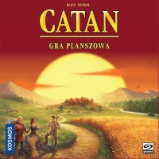
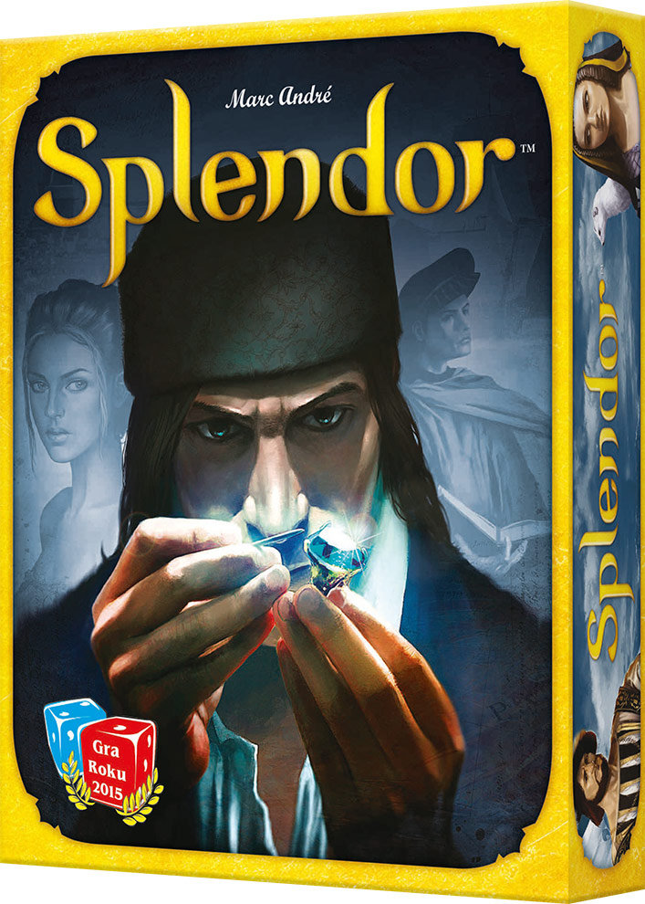
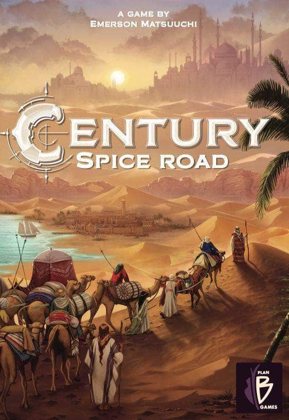
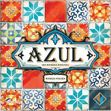
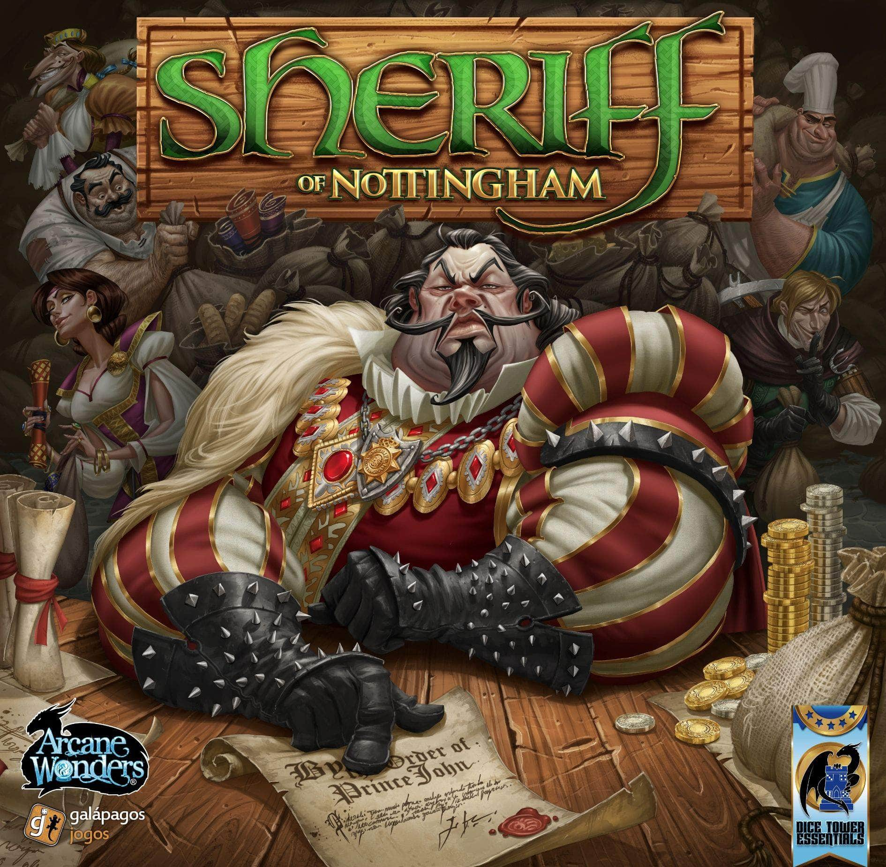
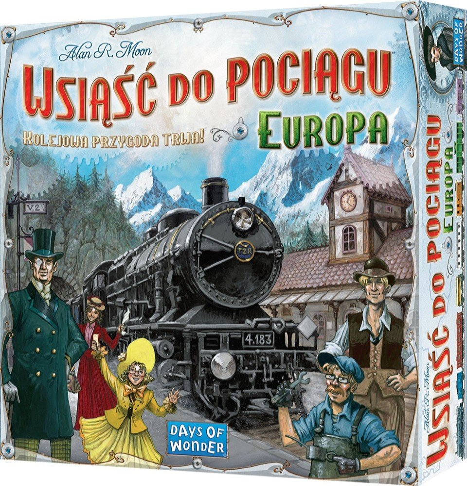

| Gra | Krótki opis | Obrazek |
|---|---|---|
| Catan | Zawodnicy wcielają się w osadników, którzy zamieszkują świeżo odkrytą wyspę Catan. Każdy z nich otrzymuje rolę dowódcy w swojej kolonii, którą muszą rozbudować i zagospodarować. Do ich zadań będzie więc należało budowanie miast, dróg, wiosek, a także wydobywanie i magazywanie dóbr naturalnych niezbędnych do rozrostu kolonii.Czytaj więcej-->... |  |
| Splendor | Splendor jest dynamiczną i niemal uzależniającą grą w zbieranie żetonów i kart, które tworzą zasoby gracza, umożliwiające mu dalszy rozwój. Gracze wcielają się w renesansowych kupców, którzy próbują nabyć kopalnie klejnotów, środki transportu, sklepy - wszystko to w celu zdobycia jak największego prestiżu.Czytaj więcej-->... |  |
| Century Korzenny Szlak | Celem gry jest zbieranie punktów zwycięstwa, czyli metalowych monet oraz, przede wszystkim, kart nagród. Century: Korzenny szlak polega głównie na zagrywaniu kart i, dzięki nim, manipulowaniu różnymi przyprawami. By zebrać przyprawy potrzebne do zdobycia nagród trzeba będzie je powymieniać.Czytaj więcej-->... |  |
| Azul | W grze Azul wcielisz się w artystę, układającego przepiękne mozaiki z Azulejos na ścianach pałacu królewskiego w portugalskiej Évorze. Podczas gry, uczestnicy starają się ułożyć konkretne, namalowane na planszetce gracza wzory, zdobywając dzięki temu punkty zwycięstwa.Czytaj więcej-->... |  |
| Szeryf | W grze Szeryf z Nottingham wcielasz się w rolę kupca starającego się dowieźć swoje towary na miejski targ. W tym celu musisz przekonać Szeryfa, aby Cię wpuścił – i to za wszelką cenę! Gracze po kolei odgrywają rolę Szeryfa i decydują o tym, które torby kupieckie przeszukać, a które przepuścić bez inspekcji.Czytaj więcej-->... |  |
| Wściąść do Pociągu | Wsiąść do Pociagu: Europa to gra o wielkiej, kolejowej przygodzie. Uczestnicy zbierają karty przedstawiające wagony i używają ich by budować dworce, pokonywać tunele, wsiadać na promy i zajmować trasy kolejowe jak Europa długa i szeroka.Czytaj więcej-->... |  |